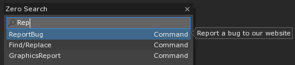
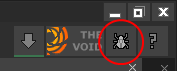
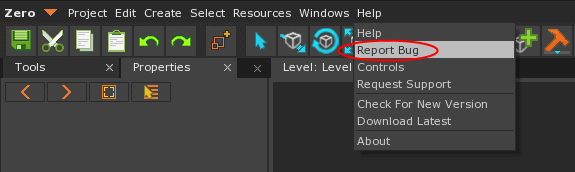
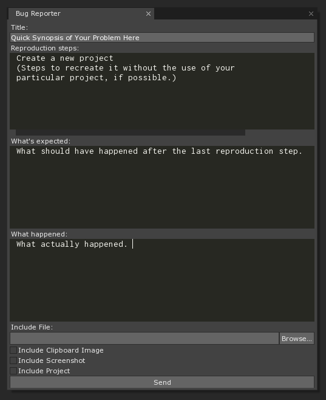
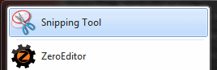

Reporting a Bug
Did you find a bug in the engine itself? We like you already. We want to make the best engine possible, and that means maintaining stability. Fixing bugs is a large task, finding them is often an even larger one, which is why we are so thankful to you for taking the time to help us, help you. You can follow the steps below to submit a bug through the engine or your internet browser.
Through the Zero Engine
- In the Level Window
- Press Space to open the Search Window
- Command:
ReportBug

Press the button:

Or Use the Menu bar:

You should now see the Bug Reporter:

If helpful, you can choose to include a particular file from your computer.
When sending the image on your Clipboard, it must be a BMP. Snipping Tool, provided with Windows, is useful for generating images that go straight to your clipboard.

Additionally, you can attach a screenshot.
Caution
The screenshot is taken of ZeroEditor when you press send. Be sure that your Bug Reporter is not obscuring the focus of your screenshot and that no personal information is displayed in front of the ZeroEditor window. Programs outside of the Zero Editor can obscure the image, such as the Windows taskbar.
- When reproduction steps require your project, you now easily send an archived version.
On the Website
This is the same place the bugs from the editor go.
Go to FogBugz
{kind=link}
Sign in with the username “leveldesigner2D” and the password “letmein”.
{kind=link}
Click on “New Case” to add a bug report.
{kind=link}
Choose editor or documentation as appropriate.
{kind=link}
When reporting a bug making sure you explain the problem in as much detail as you can. If at all possible provide reproduction steps, explain what you expected, and what happened instead. Also include your email address, so we can contact you directly if necessary.
{kind=link}